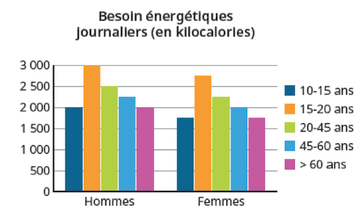
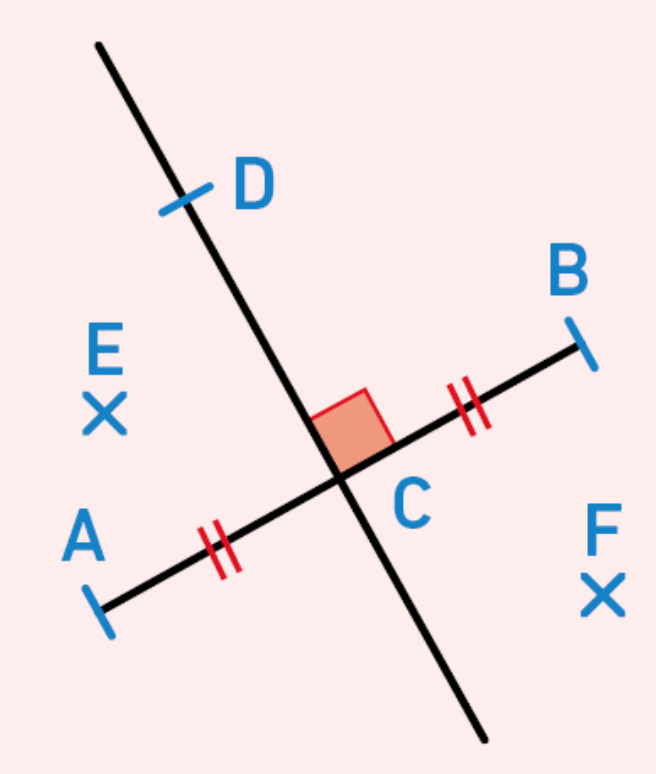

On considère le nombre : 6 , 375 |
|
Partie entière = |
Partie décimale = |
Fraction décimale : |
Décomposition : |
Le chiffre des … ► unités = ► millièmes = |
Le nombre de … ► centièmes =
|
C  □ Un homme de 35 ans a besoin de plus de 2500 kilocalories par jour. □ Une femme de plus de 60 ans a besoin de moins de 2000 kilocalories par jour. □ Une femme de 50 ans a besoin d’autant de kilocalories qu’un homme de 70 ans. □ Une femme a besoin d’environ 250 kilocalories de moins qu’un homme du même âge.
|
|
Vrai ou faux. O  1. La droite (DC) est la médiatrice de [AB]. …….. 2. Le point F est plus proche du point A que du point B. ……….. 3. Le point E est plus proche du point A que du point B. ……….. 4. CA = CB …………... |
|